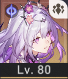
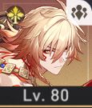

Story & Info
Release date: 26.04.2023
We play as the Trailblazer, an amnesiac adventurer travelling aboard the cosmic train Astral Express from one planet to another and helping save the planets' people in the process. As they explore different worlds, they encounter many allies and enemies while uncovering mysteries tied to Stellarons—catastrophic anomalies threatening civilizations and the balance of existence.
The narrative doesn't shy away from philosophical themes, hidden machinations of powerful factions, personal revelations about characters' pasts, and cosmic forces like the Aeons that shape fate and reality.
Battle Mechanics
Honkai Star Rail uses a turn-based combat system where teams of up to four characters take actions in an order by their speed, with basic attacks, Skills, and powerful Ultimates used to defeat foes. In battle players have usually up to 5 Skill Points (SP) that can be used to activate Skills while Basic Attacks recover them, and Ultimates have individual energy charges.
Exploiting enemy elemental weaknesses fills Toughness bars to trigger a Weakness Break, making enemies more vulnerable and often delaying their next action. Strategic use of elemental affinities, team roles, and timing of abilities is an absolute must for obtaining victory.
My Team
|
 |
 |